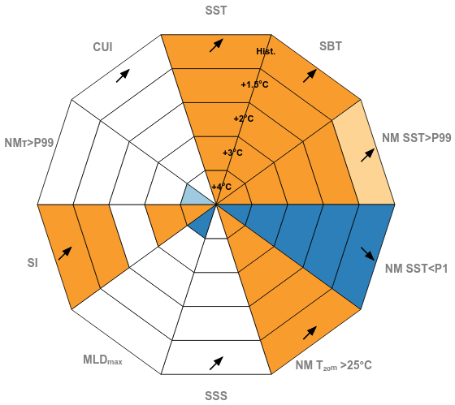

Regional climate modelling
Developing and evaluating regional climate simulations to better understand Mediterranean climate variability and future change.
Med-CORDEX · RCSMs · Ensembles
Climate scientist · Physical oceanographer
I combine observations, reanalyses and multi-model ensembles to understand Mediterranean climate change and develop impact-relevant climate information for adaptation.
Research perspective
“Mediterranean climate impacts emerge from the interaction of oceanic and atmospheric processes across multiple scales.”
The Mediterranean is one of the world's most climate-sensitive regions, where these interacting processes shape future coastal risks and adaptation challenges.
Research focus
Developing and evaluating regional climate simulations to better understand Mediterranean climate variability and future change.
Understanding how circulation, sea level, stratification and deep-water formation respond to climate change.
Translating climate information into impact-relevant indicators and climate services supporting adaptation.
Selected publications
I. M. Parras-Berrocal, R. Waldman, N. Gonzalez, B. Ahrens, W. Cabos, G. Jordà, P. Lionello, G. Sannino & S. Somot
Environmental Research Letters
I. M. Parras-Berrocal, R. Waldman, F. Sevault, S. Somot, N. Gonzalez, B. Ahrens et al.
Geophysical Research Letters
I. M. Parras-Berrocal, R. Vázquez, W. Cabos, D. Sein, O. Álvarez, M. Bruno & A. Izquierdo
Ocean Science
I. M. Parras-Berrocal, R. Vázquez, W. Cabos, D. Sein, O. Álvarez, M. Bruno & A. Izquierdo
Geophysical Research Letters
I. M. Parras-Berrocal, R. Vázquez, W. Cabos, D. Sein, R. Mañanes, J. Pérez-Sanz & A. Izquierdo
Ocean Science
Research tool
An interactive research tool for assessing marine Climatic Impact-Drivers across the Mediterranean under global warming.

Interactive climate information
The Explorer synthesizes regional climate projections into a common framework for comparing marine Climatic Impact-Drivers across global warming levels.
Associated manuscript: Assessing Regional Projections of Marine Climatic Impact Drivers Using Coordinated Ensembles: Framework and Application to the Mediterranean Sea , currently under review in Earth’s Future.
Open the Explorer ↗Leadership & collaboration
I work across the Med-CORDEX community to gather, harmonize and evaluate regional climate simulations produced by multiple institutions, building coherent multi-model ensembles for Mediterranean climate assessment.
Cross-institutional data collection, simulation harmonization, quality control and construction of Mediterranean multi-model ensembles.
Scientific committees, peer review, invited lectures, workshops and international research collaborations.
Teaching in physical oceanography, climate change, geospatial analysis and scientific programming.
Contact
For research collaborations, project discussions or scientific exchanges.